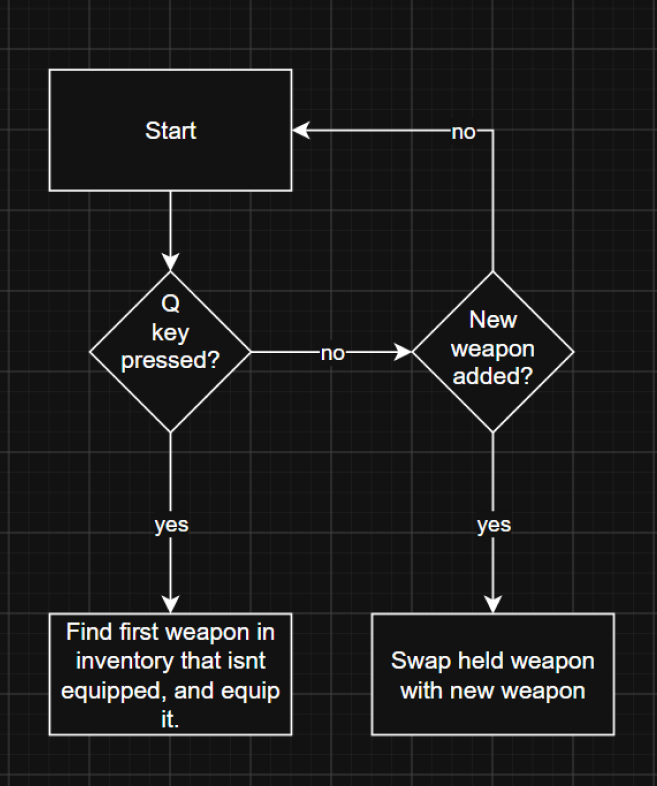

Functional requirement
“There should be an inventory system that stores your ammo, and collected weapons. You should be able to only hold 2 weapons at a time, and easily switch between them both by pressing Q. If a weapon is picked up, swap the held weapon with the one being picked up”
Testable criteria:
Weapons switch by pressing Q
Ammo is correctly tracked in the inventory.
Weapons being picked up swap with held weapon


Placeholder description: this section will explain one part of the system and how it works.
Placeholder description: this section will cover another implementation detail and the choices behind it.
Placeholder description: this section will describe how this system connects to the rest of the project.